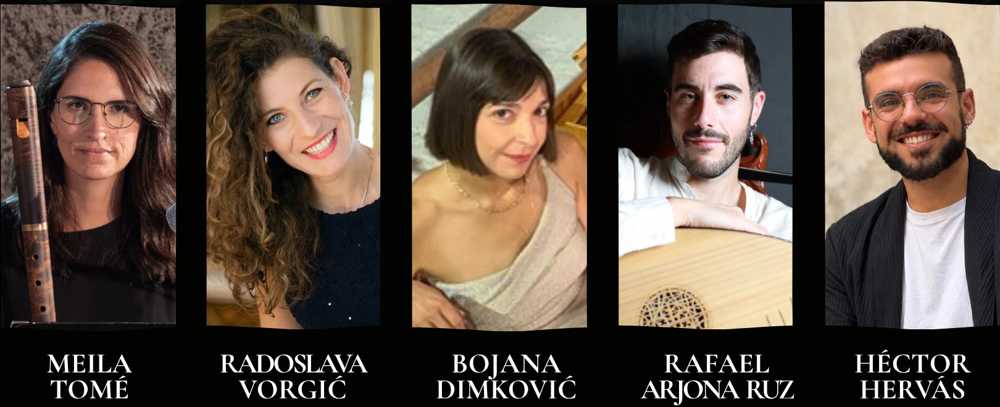

Meila Tomé — blok flauta i traverso
Radoslava Vorgić — sopran
Rafael Arjona Ruz — barokna gitara i lauta · Španija
Bojana Dimković — čembalo
Héctor Hervás — barokno violončelo · Španijabaroque cello · Spain

12–14. oktobar 2026.
Crkva Sv. Elizabete
Ćirila i Metodija 11
Telep, Novi Sad
Završni koncert:
14. oktobar u 13:00
Akademija okuplja mlade pevače i instrumentaliste koji kroz intenzivan rad sa mentorima razvijaju stilsku interpretaciju, veštine zajedničkog muziciranja i praktično iskustvo u izvođenju baroknog repertoara.
Rad akademije odvija se u neposrednom kontaktu sa istorijskim instrumentima i izvođačkom praksom 17. i 18. veka, sa posebnim fokusom na zajedničko muziciranje, razumevanje stilskih karakteristika i pripremu završnog koncerta.
Novosadska barokna akademija namenjena je pevačima i instrumentalistima zainteresovanim za istorijski informisanu interpretaciju rane muzike.
Prilikom prijave polaznici biraju jednu glavnu oblast:
Donacija za učešće iznosi 3.500 RSD.
Nakon pregleda prijave, organizatori će kontaktirati polaznike radi potvrde učešća, rasporeda i informacija o uplati.
Radionice i mentorski rad
Radionice i mentorski rad
Završni koncert polaznika akademije
Mentori
Meila Tomé — blok flauta i traverso
Radoslava Vorgić — sopran
Rafael Arjona Ruz — barokna gitara i lauta · Španija
Bojana Dimković — čembalo
Héctor Hervás — barokno violončelo · Španijabaroque cello · Spain
blok flauta i traverso
Meila Tomé je brazilska flautistkinja specijalizovana za blok flautu i traverso. Studirala je ranu muziku na Lemmensinstituut u Levenu, gde je završila osnovne i master studije sa najvišim ocenama, radeći sa Bartom Coenom, Bartom Spanhoveom i Koenom Dieltiensom. Usavršavala se i na ESMAE u Portu, a studije traversa završila je u klasi Franka Theunsa.
Od 2010. živi i radi u Novom Sadu, gde je pokrenula Vojvođansko udruženje za ranu muziku – VEMA i festival Dani barokne muzike. Osnivačica je ansambla Musica Antiqua Neoplantensis i aktivna je kao izvođač, pedagog i umetnički organizator projekata posvećenih istorijski informisanoj izvođačkoj praksi.
sopran
Radoslava Vorgić je sopran iz Novog Sada. Diplomirala je solo pevanje i opštu muzičku pedagogiju na Akademiji umetnosti u Novom Sadu, a master i koncertni ispit završila je na Johannes Gutenberg univerzitetu u Majncu u klasi Claudije Eder. Doktorirala je na Akademiji umetnosti u Novom Sadu.
Profesionalnu karijeru započela je kao članica Mladog ansambla Državne opere u Majncu, a nastupala je i u Nemačkoj, Švajcarskoj i Srbiji. Posebno se bavi baroknim vokalnim repertoarom i istorijski informisanom interpretacijom, a usavršavala se, između ostalih, kod Emme Kirkby, Ton Koopmana i Andreasa Scholla. Danas je aktivna kao koncertna i operska pevačica, pedagog i saradnica na projektima rane muzike.
barokna gitara i lauta
Rafael Arjona Ruz je španski lautista i gitarista specijalizovan za istorijske trzalačke instrumente renesanse i baroka. Studirao je u Kordobi, Granadi, Sevilji i na Kraljevskom konzervatorijumu u Hagu, radeći sa muzičarima kao što su Antonio Duro, Zoran Dukić, Mike Fentross i Joachim Held. Usavršavanje je nastavio na Univerzitetu umetnosti u Cirihu u klasi Eduarda Egüeza.
Kao lautista i gitarista sarađivao je sa ansamblima kao što su Netherlands Bach Society, Dunedin Consort, Capella de Ministrers, Orquesta Barroca de Sevilla, La Guirlande i Stradella Young Project. Njegov rad posebno je usmeren na baroknu gitaru, teorbu, lautu i ponovno otkrivanje repertoara za istorijske trzalačke instrumente.
čembalo
Bojana Dimković je pijanistkinja, čembalistkinja i kamerni muzičar. Nakon školovanja u prestižnoj Purcell School u Velikoj Britaniji završila je studije izvođaštva na Guildhall School of Music and Drama u Londonu, a doktorirala je kamernu muziku na Fakultetu muzičke umetnosti Univerziteta umetnosti u Beogradu.
Nastupala je kao solista i kamerni muzičar širom Evrope, sarađujući sa ansamblima kao što su Die Kölner Akademie, New Trinity Baroque, St. George Strings i Musica Antiqua Neoplantensis. Redovno radi kao continuo izvođač i mentor na baroknim akademijama. Trenutno je umetnički saradnik Fakulteta muzičke umetnosti u Beogradu.
barokno violončelo · Španijabaroque cello · Spain
Héctor Hervás rođen je 1994. godine u Granadi, gde je počeo da se bavi muzikom sa osam godina. Završio je studije u Granadi i na Real Conservatorio Superior de Madrid, a master studije iz modernog i baroknog violončela završio je na HKU Utrecht Conservatory u Holandiji, gde je radio sa Violom de Hoog, Timorom Roslerom i Jeroenom den Herderom.
Sarađivao je sa brojnim orkestrima i ansamblima, među kojima su National Jeugdorkest Nederland, Balearic Islands Symphony Orchestra, Neue Philharmonie München, National Orchestra of Luxembourg Youth, Orquesta Ciudad de Granada i Camerata Garnati. Nastupao je širom Evrope, u SAD i Kini, kao i na brojnim festivalima.
U oblasti rane muzike usavršavao se kod umetnika kao što su Bruno Cocset, Christophe Coin i Roel Dieltiens, a nastupao je na festivalima kao što su Utrecht Early Music Festival, Early Music Festival Sevilla i Festival de Música Sacra de Granada.
Dobitnik je više priznanja i stipendija. Sarađuje sa L’Accademico Formato i Baroque Orchestra of Badajoz, a od 2022. godine bavi se i gradnjom gudačkih instrumenata.
Uz podršku


Učešće Rafaela Arjone Ruza u ovom programu realizuje se uz podršku Acción Cultural Española (AC/E), kroz Program za internacionalizaciju španske kulture (PICE), kao i uz podršku Ambasade Španije u Srbiji i AECID-a.
With the support of Acción Cultural Española (AC/E) through the Programme for the Internationalisation of Spanish Culture (PICE).